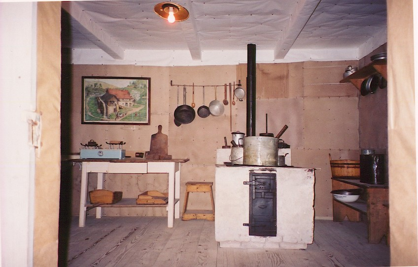

§ Home § Search § SoupTales § Any comments?
{kind=link}
Souping through Slovenia
(e-SoupSong 19: November 1, 2001)
ONCE UPON A TIME two women drove over the Julian Alps into that country no one can ever get straight. "They think it's Slovakia," says a character in Drago Jancar's book Mocking Desire--his friend replies, "My landlord [in New Orleans] thinks it's Pennslovenia." In Paul Coelho's novel the fragile Veronica, native of Ljubljana, attempts to take her life because "Honestly, no one ever knows where Slovenia is."
Slovenia. Yes, that's right, Slovenia. Formerly part of Yugoslavia, it's just a nick off Italy's top eastern side...and, going back in time, before that was split up between Italy, Germany, and Hungary; part of France; part of Austria-Hungary; besieged by the Turks; subjugated by Magyars then Germans; swallowed by the Franks; settled by Southern Slavs migrating from the Baltic Sea; conquered by Ostrogoths then Langobards; razed by Huns; colonised by Rome; and before that Celts, Illyrians, and prehistoric man. It's small--about the size of New Jersey--but full of big things. Like towering Alps. Mighty rivers. Picturesque Adriatic beaches. Huge cave systems. A massive karst plain that houses an immense "disappearing" lake. And did I mention it has a love affair with soup?
As background, I should mention this is the third time friend Maggie and I have taken to the road together. We met at work 6 years ago: Speechwriter meets Legislative Counsel, me always getting the benefit of her steel trap lawyer's mind. We played golf occasionally. Then one day we thought, what the heck, let's do a road trip through the Czech Republic. Very fun. Last year we went to Hungary, piqued to learn why Hungarians get such a bad rap in Czech art museums (answer: lusty Magyars on horseback stealing Czech women). This year, Slovenia. Why not?
By trip's end, we'd walked 12 towns; stayed in Persian-carpeted castles, pensions, and rooms-to-let with lumpy beds and vulture-throated mosquitos; explored the Skocjan caves; toured museums on mercury/cinnabar mining, lacemaking, beekeeping, serpentine mining, and dormice; and trekked to a military hospital museum cut into a nearly inaccessible mountain gorge. We hiked to waterfalls, around lakes, through forests, athwart medieval seasalt operations, and into a dark cemetery dedicated to the fearful losses at Kobarid (Capodistra) in World War I, backdrop of Hemingway's Farewell to Arms. And everywhere we went, we ate soup. And everywhere we went, we asked people what soup they liked best.
{kind=link}
FIRST STOP, LAKE BLED
Samo, manager of our Vila in Bled, doesn't hesitate. "Cream of mushroom soup," he says, "Oh, I just love it," looking skyward and licking his lips.
 Hiking around Lake Bled, we stop at Pension Mlino’s outdoor cafe, looking out on the lake's tiny island that is home to both a prehistoric fertility goddess and the Virgin Mary . It’s close to sunset, sitting under big deciduous trees turning bronze and yellow. An Italian motorcycle club pulls up, all black leathers dialing cell phones. After an opening misstep with harried waiter Vlado--trying to order beer (Zlatorog) but getting ice cream sundaes (sladoled) instead--he recommends the mushroom soup: "You take the mushrooms, slice, then onion, and boil." In fact, it’s a superb beef consomme with big chunks of succulent porcini mushrooms, carrots, thyme, and parsley, with a spoonful of sour cream floating in the broth. These boletus edulis mushrooms come from local women who know local forests like the backs of their hands, he says--and, indeed, I've seen them in the marketplace with wild mushrooms the size of basketballs.
Hiking around Lake Bled, we stop at Pension Mlino’s outdoor cafe, looking out on the lake's tiny island that is home to both a prehistoric fertility goddess and the Virgin Mary . It’s close to sunset, sitting under big deciduous trees turning bronze and yellow. An Italian motorcycle club pulls up, all black leathers dialing cell phones. After an opening misstep with harried waiter Vlado--trying to order beer (Zlatorog) but getting ice cream sundaes (sladoled) instead--he recommends the mushroom soup: "You take the mushrooms, slice, then onion, and boil." In fact, it’s a superb beef consomme with big chunks of succulent porcini mushrooms, carrots, thyme, and parsley, with a spoonful of sour cream floating in the broth. These boletus edulis mushrooms come from local women who know local forests like the backs of their hands, he says--and, indeed, I've seen them in the marketplace with wild mushrooms the size of basketballs.
 We've fatally thrown Vlado into a tizzy, though. Maggie, who hasn't met a vegetable she likes, is not about to eat fungus. But Vlado is bringing two of everything: 2 ice cream sundaes, 2 beers, 2 bowls of soup. So I cheerfully eat both bowls. And what’s Vlado’s personal favorite? He’s coy. Well, he supposes bean and mushroom soups if he’s restricted to Slovenian soups. "What if you’re not restricted?: "Ahhhhh, minestrone," he says, "Yes, ITALIAN minestrone." The bikers, who have been listening in, look up approvingly.
We've fatally thrown Vlado into a tizzy, though. Maggie, who hasn't met a vegetable she likes, is not about to eat fungus. But Vlado is bringing two of everything: 2 ice cream sundaes, 2 beers, 2 bowls of soup. So I cheerfully eat both bowls. And what’s Vlado’s personal favorite? He’s coy. Well, he supposes bean and mushroom soups if he’s restricted to Slovenian soups. "What if you’re not restricted?: "Ahhhhh, minestrone," he says, "Yes, ITALIAN minestrone." The bikers, who have been listening in, look up approvingly.
We have dinner at Bled castle, which we’ve achieved on foot after a nearly vertical ascent. When the cold drives us off the patio overlooking the lake, we file into the restaurant, formerly the dungeon of the castle and looking like one. Small choice on the menu: consomme with mushroom or egg or noodles or rice. Mushroom for me--unlikely that I'll tire of boletes any time soon. Maggie, queen of picky eaters, gets the egg variation--a raw blob in broth. I can't believe she eats it.
{kind=link}
Also in Bled, Natalya at information services: "My favorite? Me? Cream of, of, you know, the long white vegetable. Yes, yes, asparagus. And mushroom." Creamed? "Yes, always with cream, all soups. Onion is also very good. I make all my soups the same way. First I cook the vegetable, then add salt, pepper, special spices for soup [marjoram, basil, thyme], and then the cream."
Simone at Bled’s china shop struggles with my English as much as I struggle with her Slovene. "Parlez vous francais?" she finally asks. "Mais oui, un peu." "Alors, j’aime beaucoup la soupe! Avec champignons, tout le temps. Maintenant, veloute de tomate surtout. Toujours avec la creme." Parisienne Simone had married a Slovene and moved to Bled 38 years ago.
"BAPTISM ON THE SAVICA"
Deep in the Alps at Bohinj Lake, we school ourselves on national poet France Preseren’s extraordinary "Baptism on the Savica" ("Krst Pri Savici"), pull on our best hiking boots, and set out (Maggie with her Alpenstock) for this incredible source of the mighty Sava river, a 200-foot waterfall that shoots out of sheer rock high up in the mountain. "Our hero listens to the thund'ring falls / Next morning, thinking as the banks below / Are shaken by the water as it brawls / And roars, while undermining in its flow / The trees and cliffs and tow'ring mountain walls / And in its wrath its foamclouds skywards blow! / Thus hast'ning youth its pace but first corrects / In later life -- so Crtomir reflects."
{kind=link}
Miro, the young 6-foot lanky National Park Ranger just outside the Falls, is taken aback by my question. "But I don’t much like soup." "But if you were given a choice?" No reaction. "But did your mother ever make you one you liked?" "Oh yes," brightly, "but I don’t know how to say it in English." He writes: juha z gobami. Those fabulous mushrooms again.
{kind=link}
Dinner at Hotel Zlatorog produces Planinski jusnik z ajdovimi zganci, Mountain soup with buckwheat. Not pretty: a white soup plate filled with pale, bony beef, venison, and turkey chunks, fine soup noodles, carrot bits, and minced parsley in a mixed meat broth. The buckwheat--strong and smoky tasting from being grilled into a mush with pork cracklings--is served on the side for mixing in. The waiter is offended when I ask him why it's so smoky. "It's not smoky," he says, "It's not smoky at all." Maggie orders Goveja juha z rezanci, consomme with noodles. She likes it a lot. She pretty much orders it every night from then on. Her motto: Don't mess with success.
Moica, a young and very pretty girl who works at the hotel’s spa, is passionate about food and life, a little tragic about her boyfriend’s recent betrayal. "I used to cook, but just for my boyfriend. So I don’t anymore because I’ve moved back home. People say I have a natural touch, though." She loves soup, but not so much meat ones. "My favorites are the ones my mother makes. One is pure vegetable with small chunks of potato and green beans in water. No tomato, no paprika, nothing but a little salt and pepper. Another is kale that you roll up the leaves and slice thinly, put in water, then cook on medium for a few minutes. Thicken with small pieces of potato--you can puree if you like--and salt and a little pepper at the end. It’s very quick to make." Moica’s mother had worked long hours in a day care center during the Tito years and used to bring home extra snack bags for Moica's dinner, only making these soups on weekends.
SOUP IN THE DARK DAYS OF WORLD WAR II
Twisting over hairpin mountain roads to get to the plain, we drive through areas that had seen some of the most resolute civilian fighting of World War II. Here’s why: after the disintegration of the Yugoslav kingdom in April 1941, the Italians expanded their occupation in Slovenia as far as the river Sava, provoking local farmers to join an underground Liberation Front. Slovene partisans worked to liberate the country, orchestrating a national uprising after Italy surrendered in September 1943...only to have fascist Germany invade.
 It was outside Cerkno that partisans created a hospital called Franja, built deep into a mountain gorge, to care for the wounded of its IX corps. Franja survived on soup--witness the giant soup pot in its crude kitchen--made from enemy food supplies seized by the partisans. It was a place of gritty heroism and suffering, given mute testimony by its graveyard of amputated extremities. So what does the man on duty say when I asked him his favorite soup? His eyes light up: "Italiano Minestrone!"
{kind=link}
Next day, in the heart of Vipava wine country--the harvest over and sun blazing in clear blue skies--we stop at the Vipavksi Hram to sample some wines and get a bite to eat. I order the Kremna ribja juha v kruhovi skodelici, an unexpectedly delicious bisque thick with mussels, fish, and other fruits de mer. But Borut, who manages the wine tasting at the hram, shrugs. "My favorite is mushroom, thick with cream. It's tradition," he says. "It's like home."
LAND'S END ON THE ADRIATIC SEA
It's not easy staying inside Slovenia in its southwest corner: a tiny little spit of land sneaks between Italy and Croatia, forming a 29-mile coast, about the distance of my roundtrip commute to work. Koper is a working-man town--formerly an island--and we go that night to a working man's eatery that is housed in an old palace. While I sample the minestra jota z kraco--"200% authentic Slovenian," the proprieter says as he taps my wine out of a barrel--men in overalls come in, take shots of vodka or beer standing up, then leave as suddenly as they arrive. The jota is very beany, rich with barley, a smidge of pork, pasta, carrots, and celeriac, served in a big white bowl.
{kind=link}
Next day we trudge through the now much diminished medieval salt pan operations at Secovlje (in no man’s land, between the Slovenian and Croatian borders). We snap up little gunny sacks of this precious, hand processed salt, then head back to Izola to dine on its famous Bobici, a traditional Istrian soup of tomato-based broth filled with barley, pasta, julienne strips of prsut (Slovenian prosciutto ham), corn, and brown pinto beans. It’s a variation of pasta fizol, or the Italian pasta e fagiole. We bask seaside at the Parangal Grill, watching young mothers parade their babies in strollers, listening to the gulls, surrounded by locals drinking wine and killing time during their 4-hour lunch break.
That evening in Piran, an exquisite red-roofed medieval city, we settle in a cafe overlooking violinist Tartini's statue and Piran's huge oval square. It’s sunset and three very cool Slovenian guys with short blonde hair and sunglasses fling themselves into chairs next to us at Gostilna Mario. I’m impressed: eschewing fast food, they order traditional Goveja juha--beef consomme--with rice. Clearly, it's the tradition thing. That night Maggie and I go first class: we dine at the elegant Neptun. My scampi soup--skampova juha--is just fair: thin tomato fish broth mottled with oil, garlic, shrimp bits, rice, celery seed, pepper, and parsley.
{kind=link}
DEEP INTO THE EARTH AT SKOCJAN CAVES
We're waiting for Borut--our pale, young, and kindly guide, 3 silver hoops in his ear--to start the tour. I hunker down in the cafe with some powerful coffee (Turkish legacy) when suddenly Maggie bounces in with Janja, a public relations person on a company trip from Ljublana. Janja is the first one who tells me, with feeling, about the Slovenian custom of families making soup together on Sundays. And not just any soup, but Maggie's favorite: goveja juha--that rich beef consomme that is even on the menu at pizzerias. "Start with a joint of beef in cold water," Janja says, "then saute onion, put in the soup, salt and pepper, tomato, simmer for 2 hours." Janja keeps looking at Maggie for help and advice in describing the process. Maggie tells me later she's never made beef soup in her life.
Borut, spelunker extraordinaire, gives the tour sequentially in Slovenian, German, and English. He's enthusiastic about the caves and outspokenly proud of being Slovenian. His eyes light up when he talks about the partisans during World War II--and they flash when he talks about how Slovenians fought "to take back our country from the," sneering, "It-TAHL-liens." Borut says he loves soups: "They are a family tradition!" He loves that beef consomme, with carrot, onion, and garlic added at the end; and pasta fizol with beans, dried pork meat, and noodles; and jota, made with either sauerkraut (zelje) or pickled turnips (repa) and served with snitas, a sweet bread sprinkled with sugar. "Yeah, we had soup everyday for years," he adds, "one day with zelje, next with repa, next the one with beans."
{kind=link}
Drago Telic, a stocky man with sparse grey hair, rents us a room in his house at Cerknica. He says we've arrived on a special day for birdwatching, and he has, in fact, been watching birds all morning. "Could I ask you to tell me your favorite soup?" I say. His brow furrows, and he disappears to locate a Slovenian-English dictionary. "Oh, of course every family on Sunday has traditional beef bouillon with vegetables, but then there are special soups made with particular vegetables. Kaula is the best soup in the world," he adds. "It's like jota, but special to here with beans, potatoes, and, most important, kohlrabi."
Maggie and I don't see many birds, but we circumnavigate Cerknica's "disappearing lake"--called Lacus Lugeus by ancient historian Strabo, who was totally perplexed by it. For most of the year it's a field, underpinned by a collapsed karst cavern--but when it floods from rain and underground springs, it becomes a 10-acre lake...just a few feet deep. For us, it's at half mast: almost at full lakehood, but with immense islands popping through. On a dare, we could wade across it like Gulliver in Lilliput's sea. We dine that night at the local hotspot--a pizzeria called Valvasorjev hram, named after brilliant 17th century Slovenian naturalist Janez Valvasor, author of The Glory of the Duchy of Carniola. We've run into this guy's legacy everywhere we've gone. Now we watch the waiters setting up for tomorrow's wedding reception. I spoon up another bolete mushroom soup and Maggie contently downs another beef consomme with noodles, waiting for our pizza. This is the night that Maggie loses a pint of blood to mosquitos.
{kind=link}
Our last gasp in this part of Slovenia should not be passed over. We get bored with the disappearing lake and decide to find remote Sneznik Castle, described as "lovely" and "best preserved." We drive endlessly over tiny roads. Alas, its posted hours are not honored. We circle it and its moat on foot; jiggle all the doors; have conversations with other hopefuls standing at the gate; succumb to American impatience and start to explore the rest of the grounds. That's when we find The Dormouse Museum. We inadvertently backdoor the place, unaware it's there, just popping through the exit door as its only tour guide is in midsentence with a German group. We apologetically work our way through the crowd to the museum's entrance, which is thick with stuffed dormice and dormice lore. "What ARE these things?!" asks Maggie. Truly, outside of Alice in Wonderland and Jefferson Airplane's "feed your head" dormouse in "White Rabbit," we are clueless.
Dormouse trapping started in Slovenia in the 13th century--when natives discovered "the meat is savoury and greasy." It was that good, in fact, that peasants had to pay money for the right to set traps in feudal forests. By the 19th century, Josip Jurcic had written a classic short story about "An Autumn Night Among Slovene Dormouse Catchers." By the hard days of World War II, partisans were trapping dormice for food and using their fat to grease their weapons. Bottom line: Dormouse Soup became a classic. Okay, may not be easy to find the main ingredient, but chef Slavko Adamlje has the recipe: 4 dormice fried in oil, sprinkled with flour then stewed in water with potatoes, herbs, salt, pepper, and lemon peel--flavored with vinegar just before serving. This little critter gives itself away by its distinctive "murmur"--is caught on teeny bow traps on tree limbs. It's also captured in national poetry: "I've got a beast/Running like the devil,/mustaches long,/Its teeth are strong."
"BELOVED" LJUBLJANA--THE PARIS OF SLOVENIA
I am struck by Jozef Petkovsek's painting in the National Gallery. "At Home," painted in 1889, shows a family at table. Dad is in a coarse woven suit; son in a blue shirt with a vest; mother and daughter in long dresses with snow white blouses and long white aprons. Mom looks extremely haggard, a red scarf covering her head. They're sitting on benches, holy pictures behind them. The table is spread with a table cloth, and it's set with a big pottery tureen in the middle, soup bowls at two places, and 4 spoons. It's a sober picture. There's no real sense of poverty, but the colors are subdued and the family expressionless. Next to it is Petkovsek's companion piece "A Venetian Kitchen"--not much more upscale, but jolly and vibrating with color. It makes me think about how people have been talking to me about soup: Always, always, it's a family tradition--a serious business that is formally observed.
And lots of people talk about it in Ljubljana, this city where Jason is supposed to have sailed with his Argonauts and battled a terrible dragon before portaging ship and golden fleece all the way to the Adriatic. Matejs at the Cybercafe runs his hand through his blond hair and answers without hesitation: Mushroom soup. "How about you?" he asks his friend Albion. "I don't like soup. My mother made it rarely." I love it that he uses the word "rarely"--a beautiful word that you seldom hear. "Come on," says Matejs, determined to help me with my labors. "Okay," says Albion, "I like chicken soup with vegetables a little." Eduard, a ruddy man with gentle eyes, is a beekeeper who sells his honey in the marketplace. He blushes with pleasure at the thought: "Cream of mushroom is my very favorite, very nice and rich." Jewelry designer Tomaz likes zelenjavna juha, vegetable soup. His sister Gurka, a student in social work, goes with traditional beef consomme, goveja juha. She says she expects to graduate in December: "With so much going wrong in my country, it is important to have a serious career that will help the people." Tomaz is stocky and blond; Gurka is tall, dark, and intense.
{kind=link}
Lidja, who works in a bookstore, goes through every shelf in the place to find me books on cooking, folklore, and poetry. She's small and thin, severe brown hair, warm brown eyes, shoulders hunched, quick movements. I can't help it, I think of a dormouse. She was born in Bela Krajina and extols its cooking. "Of course the cuisine there is very meat based, and I was brought up in meat ways. But now I am a vegetarian." I talk about vegetarianism in the U.S. and ask her if it's common in Slovenia. "Oh no. My friends are upset with me about it. They think it's very strange. But I think if people refuse to kill animals for food, then maybe they will refuse to kill each other." She gives me a recipe for tople kumare, a traditional soup that has no meat in it: Press the liquid out of cucumbers that have been salted, put in water with onion, cook until tender, then puree. Cook and mash potatoes separately, then mix into the puree. Heat these up, add some chopped tomatoes, and garnish with parsley and a dollop of sour cream.
It's in Ljubljana that we have our greatest, but not necessarily best selection of soups. Maggie takes a chance and orders minestra. Oops, vegetables. She passes the bowl to me. My jota is very sour: an opaque broth filled with pickled cabbage and turnip, chunks of potatoes, beans, and, to my surprise, lots of whole black peppercorns. With the splotch of sour cream on top, you never see those peppercorns coming. Chicken soup with Cvicek wine is excellent--lots of hen, peas, carrots, potatoes, cabbage, turnip, cauliflower, celery root, and those pesky peppercorns again. Alas, I never get to try the Chamois soup, which is on the menu but not available. Chamois, for those of you who didn't grow up, like me, with chamois rags to polish the car, are goatlike antelopes native to the Alps. And Slovenia claims the granddaddy of them all: Zlatorog, a golden-horned chamois who guarded treasure on Mount Triglav. Everything was fine back in those mythic days until a local hunter, needing the treasure for his girlfriend, shot Zlatorog in the side. The chamois bled; his blood took root in the earth and became the miraculous flower triglavska roza; Zlatorog ate it and was healed. He then butted the hunter over the cliffs, so the story goes, and went on a just-plain-mad rampage, smashing up the valley into the rock strewn chasm it is today.
How is it I find out so much about these soups? Our waiter at Zlata Ribica, right on the canal in the oldest part of town, speaks fluent English and is interested in cooking. "How many years did you study English in school?" we ask. "None, really; I watch a lot of television." We look surprised and he clarifies: "I watched American television 7 to 8 hours a day for years and years--that was when I didn't have a job."
LAST STOP, PTUJ (and yes, it's pronounced like you're spitting)
We're very much in Roman Slovenia now, leaving Roman ruins in Ljubljana (formerly Emona), exploring Celje (capitol of Rome's Noricum province), then driving on an arrow straight road over a completely flat plain to ancient Ptuj (Poetovio) on the Drava River. It was here that Tacitus told how Legion leaders met in 69 AD to throw their support behind Vespasian's efforts to crush the gross Emperor Vitellius: "Under happier auspices and in a more loyal spirit [they]...had assembled at Poetovio, the winter quarters of the 13th legion" (Histories, III, i). This legion would soon convert to the mysterious Persian cult of Mithra and secretly sacrifice bulls to the Sun God in full expectation that their blood and semen would sprout grain and grapes. It would also take sides in bloody battles outside the city walls between rivals Magnentius and Constantius II, Theodosius and Maximus. There was no not getting involved in Rome power struggles, even in these remote places. Our hotel is dead center in the tiny ancient town, looking out at a 15-foot Roman tombstone from the 2nd century that is carved with scenes from the Orpheus myth and pierced with holes for shackling criminals to it during medieval times.
{kind=link}
It's our last night in Slovenia and we're feeling pretty blue about leaving. Only a bowl of soup will set me right, I think. At sunset we walk to the river and find an outdoor seafood restaurant bathed in pink light and lapped by the Drava. I think about its ground being soaked with Roman blood. First course, Ribja kremna juhe, a bisque-like creamy soup stuffed with mushrooms and fish. It's sensational. I ask our waiter Fajt if it's also his favorite. "Oh no," he protests in surprise. "I prefer goveja juha."
That beef consomme! Again! Maggie nods approvingly. I say, "But you work in a fish restaurant" "Yes, he says, "but fish soup isn't so much a tradition. It's beef soup that we make every Sunday as a family." "Is it your Mother who makes it?" I ask. "Well, yes, before. But now that I have my own place, I make it myself on Sunday. Every Sunday." He's about to turn away, then looks up, startled: "Oh, and bolete mushroom soup above all--a little potato only and boiled." Making rings with his fingers he plunges them down in a dramatic sign of approval: "It's fantastic!"
Best regards, Pat Solley
p.s. My apologies for the unaccented c's, s's, and z's--my program doesn't support these distinctive Slovenian characters. As for recipes, I have two native cookbooks, but neither includes the classic juha z gobami or goveja juha. So utterly traditional, so totally, but totally obvious, I guess, that there's no need to discuss. But I'll be testing and posting them and a few others in the days ahead.
Resources: Paulo Coelho's Veronica Decides to Die; Steve Fallon's Slovenia; Andrej Fritz' Slovenian Cooking; Drago Jancar's Mocking Desire; Josip Jurcic's The Tenth Brother; Edvard Kocbek's Embers in the House of Night; Dusica Kunaver's Slovene Legends; France Preseren's Poems; Adamlje Slavko's Traditional Slovenian Cookery; Tacitus' Histories (trans. A. Church and W. Brodribb); Viktor Volcjak's Franja.
* * *NEXT MONTH: 'TWAS THE SOUP BEFORE CHRISTMAS